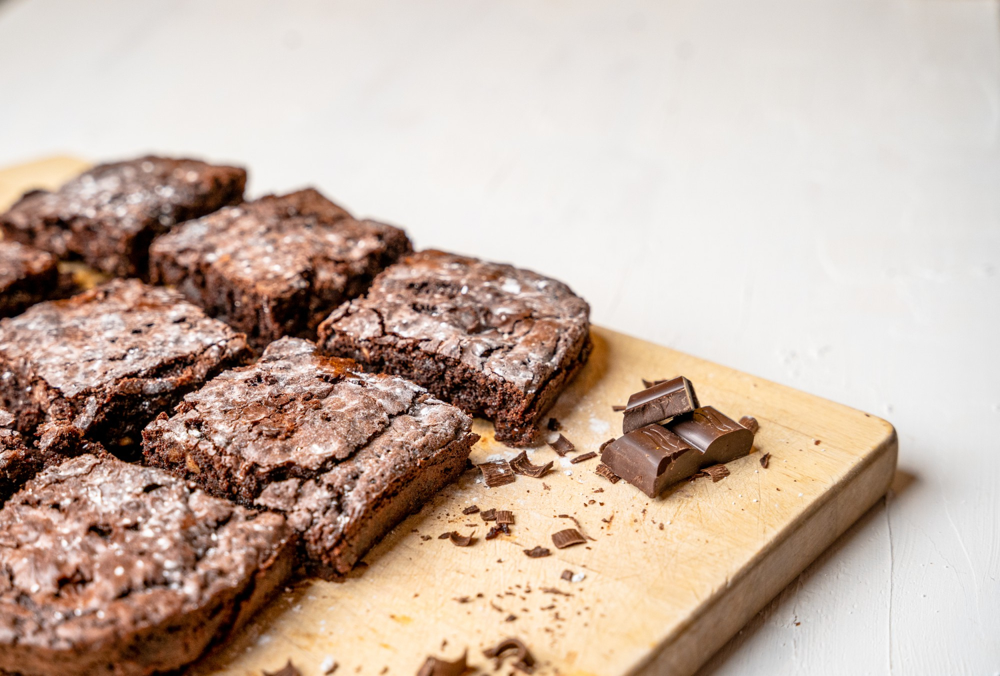

BROWNIE DE CHOCOLATE

Receita de brownie
INGREDIENTES
- 2 xícaras de achocolatado em pó
- 1 xícara de farinha de trigo
- 1 xícara de açúcar
- 200 gramas de manteiga
- 4 ovos
MODO DE PREPARO
- Em uma tigela, coloque os ovos, o açúcar e bata com a ajuda de um fouet ou garfo;
- Em seguida, adicione a manteiga e o achocolatado em pó;
- Misture tudo e depois adicione a farinha de trigo;
- Mexa a massa até que fica homogênea;
- Depois, despeje a massa em uma forma untada com achocolatado em pó;
- Leve para assar em forno preaquecido a 180 graus Celsius por 35 minutos;
- Retire do forno e sirva!
INFORMAÇÕES ADICIONAIS
Você poderá servir estes Brownies com sorvete!.